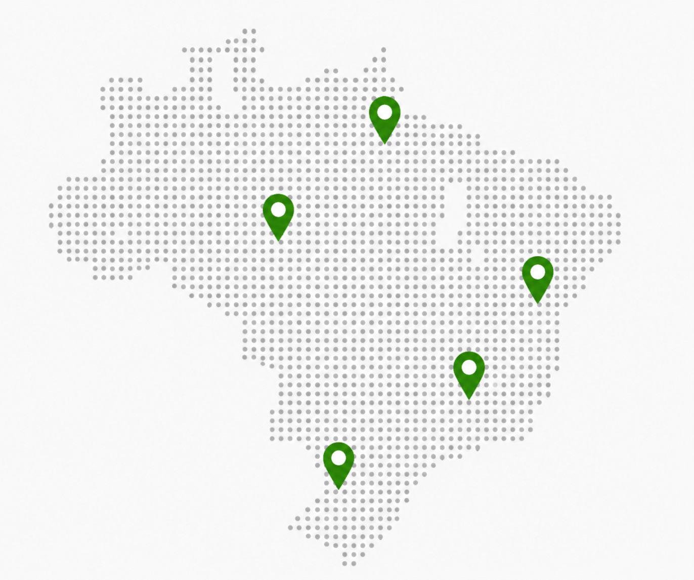

Gestão da Qualidade
Implantação de sistemas de qualidade, auditorias, POPs, documentação e conformidade.
Soluções estratégicas para aumentar a eficiência, garantir conformidade e impulsionar o crescimento sustentável da sua empresa.
Conheça a Quality
A Quality Gestão & Consultoria nasce com o propósito de transformar empresas por meio da organização de processos, implantação de sistemas de qualidade, desenvolvimento de indicadores estratégicos e capacitação de equipes.
Em um mercado cada vez mais competitivo, as organizações necessitam de processos eficientes, decisões baseadas em dados e uma cultura de melhoria contínua. A empresa atuará como parceira estratégica, oferecendo soluções personalizadas que aumentem a produtividade, reduzam desperdícios, promovam conformidade e melhorem os resultados operacionais.
Nossa atuação será pautada em ética, inovação, excelência e foco em resultados mensuráveis.
Portfólio executivo
Implantação de sistemas de qualidade, auditorias, POPs, documentação e conformidade.
Mapeamento, padronização, redesenho e melhoria contínua dos processos.
Criação de KPIs, dashboards, análises e relatórios para decisões estratégicas.
Planejamento, metas, OKRs e planos de ação focados em resultados.
Capacitação de equipes e líderes para fortalecer competências e a cultura da qualidade.
Soluções sob medida para cada negócio, com foco em eficiência e resultados.
Promover a excelência organizacional por meio da implantação de sistemas de gestão da qualidade, melhoria contínua dos processos e desenvolvimento de indicadores que apoiem a tomada de decisão e o crescimento sustentável dos clientes.
Ser reconhecida como referência nacional em consultoria de gestão da qualidade, processos e indicadores, contribuindo para o desenvolvimento de empresas mais eficientes, organizadas e competitivas.
Presencial e online
Estamos prontos para entender o seu desafio e construir soluções que realmente façam a diferença no seu negócio.

Entre em contato e descubra como nossas soluções podem gerar resultados reais para o seu negócio.